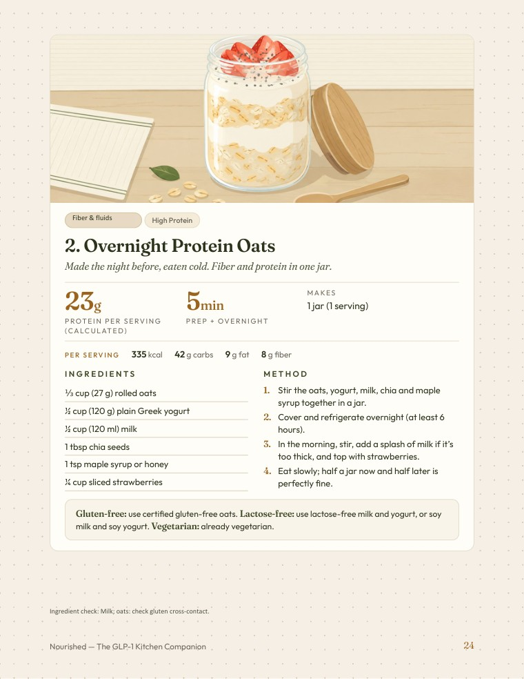
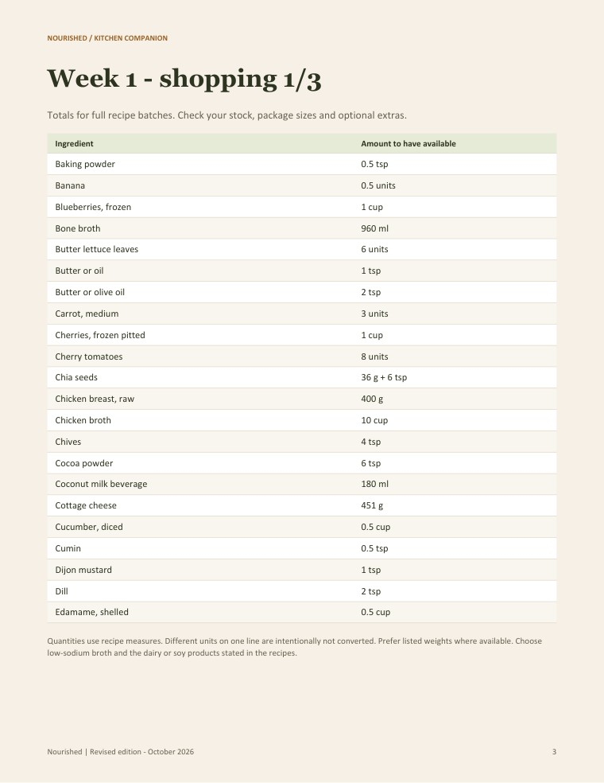
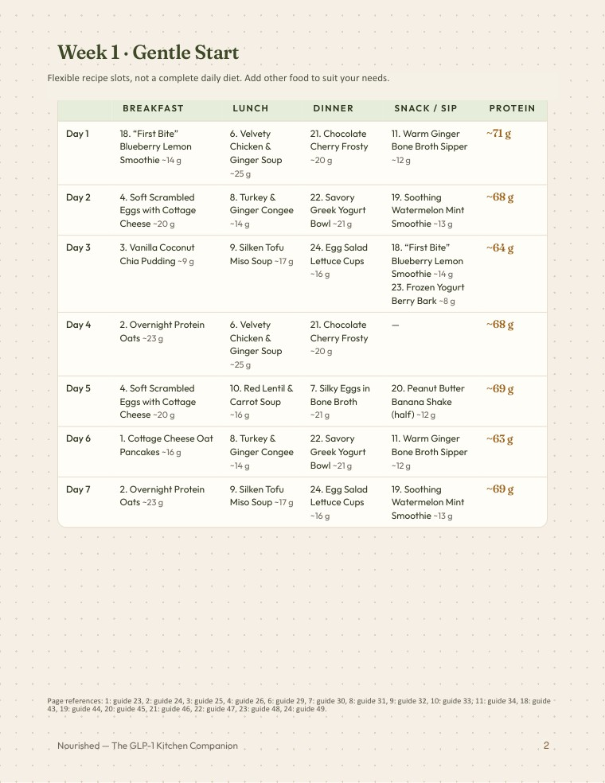
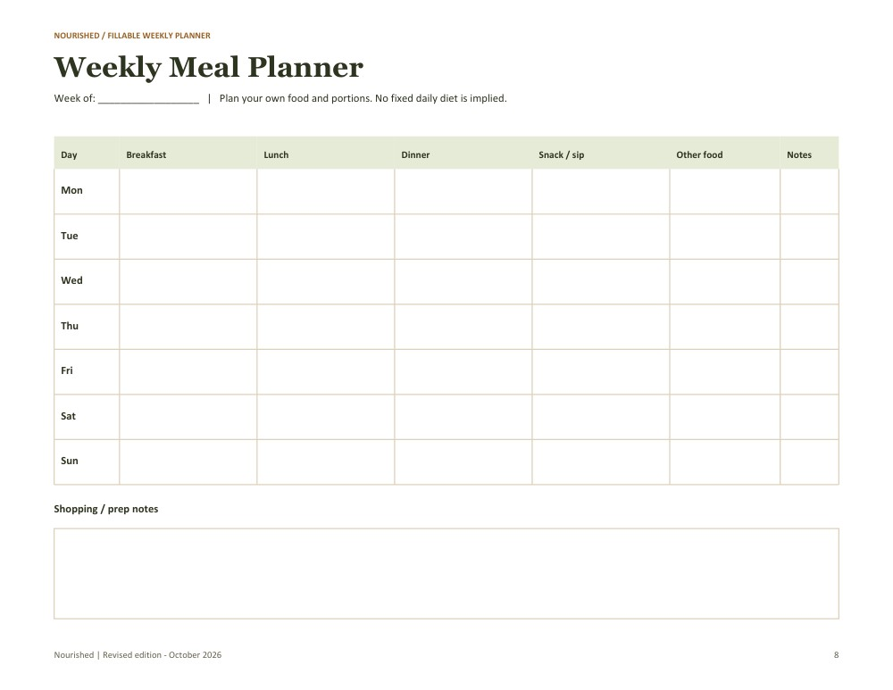

Small plates, protein first.
Breakfasts, mains, soups and snacks, with portions and protein estimates.
The GLP-1 Kitchen Companion / By Bored of Toast
Know what to cook this week, even when your appetite is small.
Small plates, big protein. Recipes, flexible meal examples and shopping lists for adults using GLP-1 medication.


One collection. Four PDFs to keep.
Choose what to cook. Adapt your week. Know what to buy.
Planned as a one-time US$20 purchase. See how buying works below.
Breakfasts, mains, soups and snacks, with portions and protein estimates.
Sips, spoon foods and soft bites to help you choose what to make.
Weekly lists and prep notes connected to the meal examples.
See what you will use
Explore a recipe, a shopping list and a week of meal examples. Open any page to read it at full size.

Ingredients, instructions and calculated nutrition estimates, with practical recipe notes.
Read this sample page ↗
Recipe amounts and buying notes, so you can check your stock before heading to the store.
Read this sample page ↗
Illustrative meal examples to adapt, linked to recipe numbers, shopping and preparation pages. Any daily totals shown describe that example only, not a target for you.
Read this sample page ↗One collection / Four useful parts
Start with the guide. Use the included bonuses for more recipe ideas, weekly examples and space to plan your own meals.
Main guide · 60 pages
Your starting point for smaller plates.
24 recipes, Weeks 1–2, shopping lists and practical prep guidance.
Bonus 1 · 9 pages
See all four weeks in one place.
Four weeks of meal examples to adapt, with a shopping list for each week.
Bonus 2 · 14 pages
Add more variety to your kitchen.
12 more recipes, numbered 25–36, with portions, side suggestions and substitutions.
Bonus 3 · 12 pages
Make room for your own plans.
11 printable sheets for meals, shopping, freezer stock and notes, plus an index.
All four PDFs are included in the US$20 one-time purchase. Read on your device or print the pages you need.
From browsing to planning
The site’s recipes, guides, collections and Small-Plate Week stay free. Nourished brings its 36 numbered recipes, four weeks of meal examples and weekly shopping lists together in files you can keep.
Prefer a small introduction? See the free Starter Kit →An honest check
For personal nutrition goals, your doctor, dietitian or care team is the right place to start.
When purchasing opens
Purchasing is not open yet. This summary follows our current Terms of Use, and we will update it if any detail changes before purchasing opens.
Checkout is handled by Lemon Squeezy, our reseller and merchant of record. Prices are in US dollars, and any sales tax or VAT for your location is calculated at checkout.
Lemon Squeezy emails your receipt and download access for the four PDFs. The license covers your own household, so please do not share or resell the files.
For questions, or a refund within 14 days of purchase, email hello@boredoftoast.com. Refunds go back to your original payment method, and no reason is needed. Full details are in our Terms of Use.
Nourished - The GLP-1 Kitchen Companion
The main guide and all three bonuses. Four English PDFs, ready to save or print.
36 recipes · 4 weeks of meal examples · 11 printable sheets
See everything included ↑Planned as a one-time US$20 purchase. See how buying works below.
14-day refund. If it is not right for you, email us within 14 days for a full refund. No reason needed.
See the free Starter Kit
On your screen. On your kitchen counter.
Keep the collection on your device, then print a recipe, shopping list or planning sheet when you need it. The Printable Pack includes 11 sheets made for handwriting.
Try the Weekly Meal Planner now: one free sheet from the full collection, ready for your own meals, portions and additions.
1-page PDF · A4 or US Letter · Landscape · Fit to printable area. Open the PDF and use your reader’s Print option. Black-and-white is suitable for this sheet.
Before you choose
Adults using GLP-1 medication who want practical cooking ideas and tools to organize meals. It does not replace individual care or a personalized nutrition plan.
Four English PDFs: the main guide and three companions. Together they contain 36 recipes, four weeks of meal examples, shopping and preparation pages, and printable planning tools.
Weeks 1-2 are in the main guide. The 28-Day Meal Plan brings all four weeks together, with a shopping list for each week. Recipe numbers continue across the main guide and Recipe Pack Volume 2.
Yes, in a PDF reader. Fixed page layouts need zoom for comfortable reading of recipes and tables. Some mobile readers do not open links between PDFs; recipe and page references also let you navigate manually.
Yes. Print only the pages you need. Choose A4 or US Letter, Fit to printable area and black-and-white for the planning sheets. The Weekly Meal Planner uses landscape; the other sheets use portrait. You can also write on them in a PDF annotation app. They are static sheets, not interactive form fields.
The planned offer is US$20 for the four-PDF collection, as a one-time purchase. Checkout and delivery details will be available when purchasing opens.
Email hello@boredoftoast.com within 14 days of your purchase for a full refund. No reason needed. Details are in our Terms of Use.
The site recipes, collections and Small-Plate Week stay free. Nourished gathers 36 numbered recipes, four weeks of meal examples that refer to them, weekly shopping lists, prep notes and printable sheets in four PDFs. If browsing the site already covers what you need, you do not need it.
Yes. Open the free Weekly Meal Planner sheet now, or see the 9-page Starter Kit. The kit page shows its current delivery availability.
General cooking and planning education, not medical advice or a personalized diet. Nutrition values are estimates; brands, substitutions and portions change them. Discuss your individual needs with your care team.